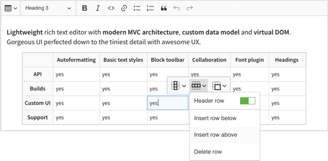

新版富文本编辑器 Ckeditor 5 比 Ckeditor 4 使用更简单, 下载 zip 包后只需要里面的 ckeditor.js (连样式文件都不需要), 像下面这样 3 步就可以了:
1 |
|

只是简单的使用, 默认的功能就可以了. 如果还需要更多的功能, 例如集成多种编辑模式, 使用非默认自带插件, 自定义插件等就不能使用直接下载的代码 (You can’t add a plugin to an existing build), 需要我们自己编译源码才行, 下面就一一进行介绍.
集成多种编辑模式
Ckeditor 5 提供了 4 种编辑模式: Classic, Inline, Balloon, Document (点击打开就能看到具体的样子了), 下载的代码只能选择其中某一种模式, 例如 Classic, 在我们的项目里, 希望在不同的页面根据场景选择使用 Classic, Inline, Balloon 的编辑模式, 默认下载的代码满足不了, 下面使用源码把几种模式全编译集成在一起, 有兴趣的同学也可以直接看官方文档 Advanced Setup (最终编译出来的 ckeditor.js 也就比单独一个模式的大几 KB, 相对于本来就有 500 多 KB 的 ckeditor.js 来说可以忽略不计, 不知道为啥就不直接合在一起):
下载源码:
git clone git@github.com:ckeditor/ckeditor5-build-classic.gitcd ckeditor5-build-classicnpm install --save-dev @ckeditor/ckeditor5-editor-inlinenpm install --save-dev @ckeditor/ckeditor5-editor-balloonnpm install
修改配置:
修改
src/ckeditor.js(注意注释中[1][2][3][4]部分), 参考默认的 ClassicEditor, 为每种编辑器设置 plugins 和 config:1
2
3
4
5
6
7
8
9
10
11
12
13
14
15
16
17
18
19
20
21
22
23
24
25
26
27
28
29
30
31
32
33
34
35
36
37
38
39
40
41
42
43
44
45
46
47
48
49
50
51
52
53
54
55
56
57
58
59
60
61
62
63
64
65
66
67
68
69
70
71
72
73
74
75
76
77
78
79
80
81
82
83
84
85
86
87
88
89
90
91
92
93
94
95
96
97
98
99
100
101
102
103
104
105
106
107
108
109
110
111
112/**
* @license Copyright (c) 2003-2018, CKSource - Frederico Knabben. All rights reserved.
* For licensing, see LICENSE.md.
*/
// [1] The editor creator to use.
import ClassicEditorBase from '@ckeditor/ckeditor5-editor-classic/src/classiceditor';
import InlineEditorBase from '@ckeditor/ckeditor5-editor-inline/src/inlineeditor';
import BalloonEditorBase from '@ckeditor/ckeditor5-editor-balloon/src/ballooneditor';
import Essentials from '@ckeditor/ckeditor5-essentials/src/essentials';
import UploadAdapter from '@ckeditor/ckeditor5-adapter-ckfinder/src/uploadadapter';
import Autoformat from '@ckeditor/ckeditor5-autoformat/src/autoformat';
import Bold from '@ckeditor/ckeditor5-basic-styles/src/bold';
import Italic from '@ckeditor/ckeditor5-basic-styles/src/italic';
import BlockQuote from '@ckeditor/ckeditor5-block-quote/src/blockquote';
import CKFinder from '@ckeditor/ckeditor5-ckfinder/src/ckfinder';
import EasyImage from '@ckeditor/ckeditor5-easy-image/src/easyimage';
import Heading from '@ckeditor/ckeditor5-heading/src/heading';
import Image from '@ckeditor/ckeditor5-image/src/image';
import ImageCaption from '@ckeditor/ckeditor5-image/src/imagecaption';
import ImageStyle from '@ckeditor/ckeditor5-image/src/imagestyle';
import ImageToolbar from '@ckeditor/ckeditor5-image/src/imagetoolbar';
import ImageUpload from '@ckeditor/ckeditor5-image/src/imageupload';
import Link from '@ckeditor/ckeditor5-link/src/link';
import List from '@ckeditor/ckeditor5-list/src/list';
import MediaEmbed from '@ckeditor/ckeditor5-media-embed/src/mediaembed';
import Paragraph from '@ckeditor/ckeditor5-paragraph/src/paragraph';
import PasteFromOffice from '@ckeditor/ckeditor5-paste-from-office/src/pastefromoffice';
import Table from '@ckeditor/ckeditor5-table/src/table';
import TableToolbar from '@ckeditor/ckeditor5-table/src/tabletoolbar';
// [2]
class ClassicEditor extends ClassicEditorBase {}
class InlineEditor extends InlineEditorBase {}
class BalloonEditor extends BalloonEditorBase {}
// Plugins to include in the build.
const builtinPlugins = [
Essentials,
UploadAdapter,
Autoformat,
Bold,
Italic,
BlockQuote,
CKFinder,
EasyImage,
Heading,
Image,
ImageCaption,
ImageStyle,
ImageToolbar,
ImageUpload,
Link,
List,
MediaEmbed,
Paragraph,
PasteFromOffice,
Table,
TableToolbar,
];
// Editor configuration.
const defaultConfig = {
toolbar: {
items: [
'heading',
'|',
'bold',
'italic',
'link',
'bulletedList',
'numberedList',
'imageUpload',
'blockQuote',
'insertTable',
'mediaEmbed',
'undo',
'redo'
]
},
image: {
toolbar: [
'imageStyle:full',
'imageStyle:side',
'|',
'imageTextAlternative'
]
},
table: {
contentToolbar: [
'tableColumn',
'tableRow',
'mergeTableCells'
]
},
// This value must be kept in sync with the language defined in webpack.config.js.
language: 'en'
};
// [3]
ClassicEditor.builtinPlugins = builtinPlugins;
InlineEditor.builtinPlugins = builtinPlugins;
BalloonEditor.builtinPlugins = builtinPlugins;
ClassicEditor.defaultConfig = defaultConfig;
InlineEditor.defaultConfig = defaultConfig;
BalloonEditor.defaultConfig = defaultConfig;
// [4]
export default {
ClassicEditor, InlineEditor, BalloonEditor
};修改
webpack.config.js(library 的值修改为CKEDITOR):1
2
3
4output: {
// The name under which the editor will be exported.
// library: 'ClassicEditor',
library: 'CKEDITOR',
开始编译:
npm run build复制
build/ckeditor.js到项目里创建编辑器:
1
2
3CKEDITOR.InlineEditor.create(document.querySelector('#editor'));
CKEDITOR.BalloonEditor.create(document.querySelector('#editor'));
CKEDITOR.ClassicEditor.create(document.querySelector('#editor'));
编译为中文版本
编译为中文版本后就不需要引入 translations/zh-ch.js 了:
修改
src/ckeditor.js中的 language 为zh-cn:1
2
3
4const defaultConfig = {
...
language: 'zh-cn'
}修改
webpack.config.js中的 language 为zh-cn:1
2
3
4
5
6
7plugins: [
new CKEditorWebpackPlugin( {
// UI language. Language codes follow the https://en.wikipedia.org/wiki/ISO_639-1 format.
// When changing the built-in language, remember to also change it in the editor's configuration (src/ckeditor.js).
language: 'zh-cn',
}
]开始编译:
npm run build
使用非默认自带插件
以使用插件 Autosave 为例, 监听文本变化时在控制台输出编辑器的文本.
cd ckeditor5-build-classicnpm install --save @ckeditor/ckeditor5-autosave修改
src/ckeditor.js1
2
3
4
5
6import Autosave from '@ckeditor/ckeditor5-autosave/src/autosave';
const builtinPlugins = [
...
Autosave,
]npm run build复制
build/ckeditor.js到项目里监听编辑器的文本变化
1
2
3
4
5
6
7
8
9
10
11CKEDITOR.ClassicEditor.create(document.querySelector('#editor'), {
autosave: {
waitingTime: 340, // 停止输入动作后触发 save 操作的时间, 默认为 1 秒
save(editor) { // 文本变化时的回调函数
return new Promise(resolve => {
console.log(editor.getData());
resolve();
});
}
}
});
执行命令 editor.execute('bold'): 对当前选区执行 bold 命令.
写一个最简单的插件
这里我们来写一个简单的插件 XButton, 在工具栏上增加一个按钮, 点击后在控制台输出一点东西, 需要注意几点:
- 插件的名字
- 创建按钮
- 插件的按钮在工具栏额名字
- 按钮的图标
- 点击按钮执行的函数
由于目前还没找到官方开发插件的环境怎么搭建, 我们就用最笨, 效率最低的办法来实现吧:
git clone git@github.com:ckeditor/ckeditor5-build-classic.gitcd ckeditor5-build-classic在 src 目录下创建目录 xbutton, 在 xbutton 中准备下面 3 个文件:
xbutton/XButton.jsxbutton/XButtonUi.jsbold.svg: 从 ckeditor 的源码中复制的
XButton.js 为插件入口文件:
1
2
3
4
5
6
7
8
9
10
11
12
13
14
15
16
17
18import Plugin from '@ckeditor/ckeditor5-core/src/plugin';
import XButtonUi from './XButtonUi';
export default class XButton extends Plugin {
/**
* @inheritDoc
*/
static get requires() {
return [XButtonUi]; // [1] 插件的其他实现文件
}
/**
* @inheritDoc
*/
static get pluginName() {
return 'XButton'; // [2] 插件的名字
}
}XButtonUi.js 为插件的 Ui 实现文件 (分开只是为了看上去职责分离, 其实可以全写到一个文件里的):
1
2
3
4
5
6
7
8
9
10
11
12
13
14
15
16
17
18
19
20
21
22
23
24
25
26
27
28import Plugin from '@ckeditor/ckeditor5-core/src/plugin';
import ButtonView from '@ckeditor/ckeditor5-ui/src/button/buttonview';
import XButtonIcon from './bold.svg'; // [3] 导入图标文件的内容为字符串
export default class XButtonUi extends Plugin {
init() {
const editor = this.editor;
// [4] xbutton 为插件按钮的名字, 在 toolbar.items 中配置后插件的按钮就会出现在工具栏上
editor.ui.componentFactory.add('xbutton', locale => {
const button = new ButtonView(locale);
// [5] 设置按钮的属性
button.set({
label: 'XButton 按钮', // 鼠标放到插件在工具栏上的按钮时的提示文本
icon: XButtonIcon, // 插件的按钮的图标
tooltip: true
});
// [6] 监听插件按钮的点击事件, 点击后会执行下面注册的 Lambda 函数
this.listenTo(button, 'execute', () => {
console.log('Click xbutton');
});
return button;
});
}
}注意: 设置按钮的图标 icon 时,
XButtonIcon需要使用 import 导入到变量中再使用, 而不能直接是图标的路径例如 ‘./bold.svg’, 否则会报错 Cannot read property ‘getAttribute’ of null, 也就是说这里的图标其实是 svg 的文件内容的字符串, 而不是路径 (console.log 输出看一下就明白了).修改
src/ckeditor.js, 配置插件到 Ckeditor 中:1
2
3
4
5
6
7
8
9
10
11
12
13
14
15
16
17import XButton from './xbutton/XButton';
ClassicEditor.builtinPlugins = [
...
XButton
]
ClassicEditor.defaultConfig = {
toolbar: {
items: [
'heading',
...
'xbutton'
]
}
}把插件编译到 Ckeditor 中:
npm run build使用编译出来的
build/ckeditor.js创建编辑器就能在工具栏最后看到我们写的插件了
补充说明:
- 上面的目录结构为了简单才这么做的, 为了做的更专业, 可以参考一下官方插件的目录结构 (例如
node_modules/@ckeditor/ckeditor5-basic-styles), js 文件放到 src 目录下, 图标放到 theme/icons 里 - 每修改一次都要 build 后才能看到效果 (我这 13 秒左右), 效率太低了, 官方不可能用这么低效的方式进行开发, 可惜在文档中又没看到
到此我们了解了开发插件的入门知识, 才踏出了万里长征的第一步, 更多的内容需要大家进一步学习.